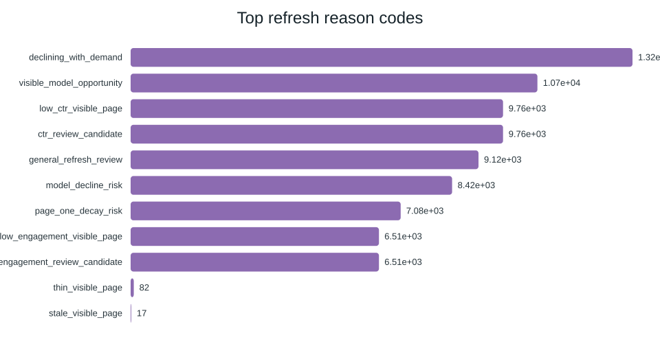

This research asks which existing content pages should be reviewed first when search visibility is present but performance may be declining. The analysis uses an anonymized starter dataset containing 30,000 content pages and observed search and content-performance signals. A ranking-oriented workflow was developed and evaluated using a client-holdout validation split, with a fixed-rule baseline used for comparison. The random forest model achieved Precision@50 of 0.740 compared with 0.240 for the baseline rules on the same validation setup. The result is intended as decision support for prioritizing human content review, not as proof that a recommended change will cause higher search performance.
Content teams cannot manually review every page with the same level of attention. The practical question is therefore how to prioritize pages that show observed signals of a possible refresh opportunity.
The research question is: Which pages should be reviewed first because they have high visibility but lower CTR or weak engagement? The intended user of the output is a content reviewer or SEO specialist. A wrong recommendation can waste review time, while missing a genuine opportunity can delay a potentially useful content improvement.
The initial lane used an anonymized starter dataset containing 30,000 content pages and 44 columns. The fields include observed search and content signals such as search volume, competition, CTR, average position, engagement rate, scroll rate, impressions, content characteristics, and trend direction.
The model report records 30,000 rows scored and 16,262 rows carrying the declining label, corresponding to a declining-label rate of 0.542. The modeling workflow uses pseudonymized content identifiers rather than client names, URLs, domains, or private search queries.
The task is treated as an opportunity-ranking problem. Each content item is scored so that reviewers can inspect higher-priority items first. The workflow combines multiple observed signals rather than relying on one fixed threshold.
The evaluated models were decision tree, logistic regression, and random forest. A fixed-rule baseline was also evaluated. The primary selection metric was Precision@50 because the practical use case is to put valuable review opportunities near the top of a limited review queue.
Validation used a client-holdout split. This helps test whether the ranking remains useful when evaluated on clients that were held out from model fitting. Leakage checks and signal audits were used to avoid treating future or inappropriate information as evidence for the decision.
The models were compared on the same validation setup. The random forest was selected using Precision@50.
| Model | ROC AUC | Average Precision | Precision@50 | Recall | F1 |
|---|---|---|---|---|---|
| Decision Tree | 0.742 | 0.575 | 0.540 | 0.716 | 0.634 |
| Logistic Regression | 0.700 | 0.522 | 0.400 | 0.567 | 0.566 |
| Random Forest | 0.750 | 0.618 | 0.740 | 0.744 | 0.640 |
| Baseline Rules | 0.627 | 0.468 | 0.240 | — | — |
The observed Precision@50 increased from 0.240 for the baseline rules to 0.740 for the random forest. In this validation setup, that means 37 of the top 50 ranked items were labeled as declining opportunities, compared with 12 of the top 50 under the baseline rule.
The main result is the difference between the learned model and the fixed-rule baseline on the same validation setup.

Takeaway: the model uses several observed signals together, rather than relying on a single threshold.

Takeaway: the ranked queue combines multiple reason codes to explain why an item was prioritized for review.

Takeaway: the output is divided into practical review actions rather than producing an automatic publishing decision.

Takeaway: confidence levels help reviewers decide where to start and where additional manual checking is especially important.

Takeaway: trend direction is treated as supporting evidence, not as proof that a content change will improve performance.
These results are directional and should be treated as decision support. The analysis does not prove that refreshing a page will increase clicks, CTR, rankings, engagement, or traffic.
The validation design reduces some leakage risk through client holdout, but it does not turn the analysis into a causal experiment. The label is based on observed data and therefore reflects the limitations of the underlying measurements. Model importance should also not be interpreted as proof that changing a particular feature will cause the outcome.
The final queue should therefore be reviewed by a person before any content change is made.
The analysis is organized in the repository under
work/notebooks/. The capstone notebook documents the paper
sections, while the Week 1–7 notebooks contain the research question,
ML framing, data contract, leakage checks, baseline, model, validation
audit, signal audit, and action playbook work.
The reported model comparison and queue outputs are also represented in the repository's generated model report and chart artifacts. The paper is intended to be reproducible from the public repository without exposing private client information.
I built a content-refresh opportunity model using 30,000 anonymized content pages and observed search-performance signals. On the same client-holdout validation setup, the Random Forest measured 0.740 Precision@50 versus 0.240 for the fixed-rule baseline. The output is a reviewer aid for prioritizing content checks, not an automatic publishing decision.
I built and validated a machine-learning workflow that ranks content pages for refresh review using observed search and content-performance signals. The work used 30,000 anonymized pages and compared multiple models against a fixed-rule baseline using a client-holdout validation design. The selected Random Forest measured 0.740 Precision@50 versus 0.240 for the baseline, while keeping human review in the decision loop.
Built on the FlyRank ML Internship dataset.